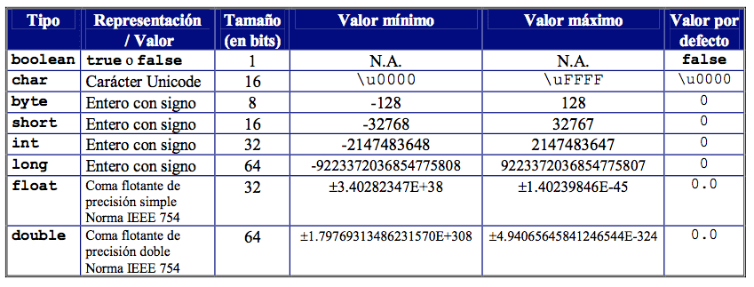

Java tiene dos categorías de datos:
- Datos Primitivos (int, char, etc.).
- Datos Objeto (tipos creados por el programador). Estos los veremos más adelante.
Los tipos de datos utilizados con más frecuencia en las declaraciones Java se enumeran en la siguiente tabla, junto con una breve descripción:

Estos tipos de datos primitivos se pueden organizar en 4 grupos:
- Numéricos enteros: byte, short, int y long. Los 4 representan números enteros con signo.
int numero=1205;- Carácter: el tipo char representa un carácter codificado en el sistema unicode. Para insertar más de un carácter deberemos definirlo como String.
String mensaje = "El primer programa";
char letra = 'A';- Numérico decimal: los tipos float y double representan números decimales.
double PI = 3.14159; - Lógicos: el tipo boolean es el tipo de dato lógico. Los dos únicos posibles valores que puede representar un dato lógico son true y false.
boolean encontrado = false;⚠️ OJO: ¡true y false son palabras reservadas de Java! No podremos definir variables y constantes con ese nombre.
Los tipos básicos que utilizaremos en la mayor parte de los programas serán boolean, int y double.